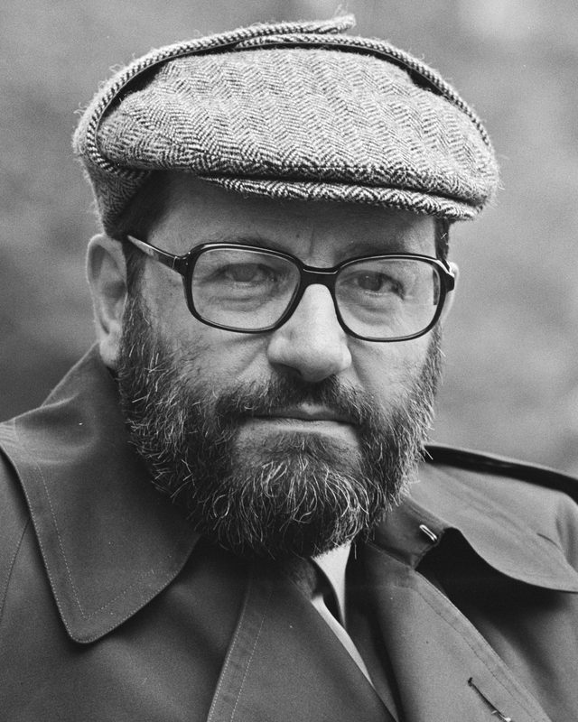
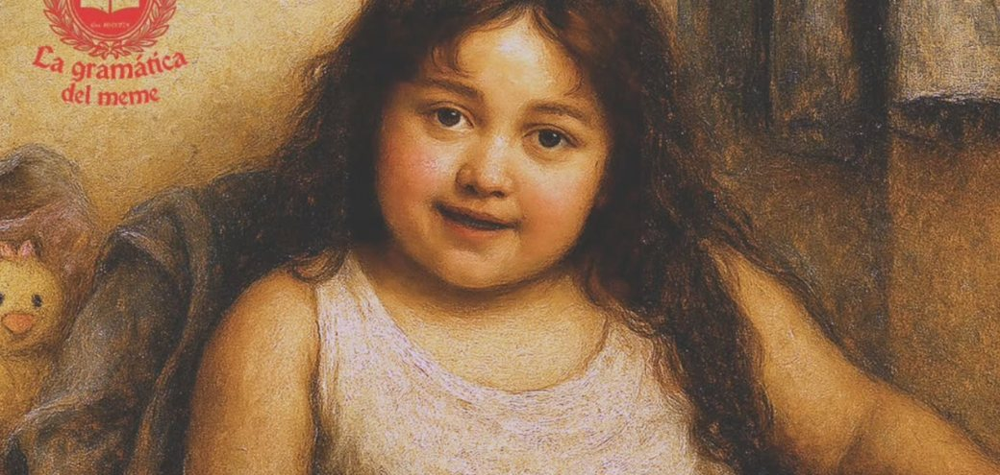

Ícono
Semejanza directa
Se parece visual o acústicamente a lo que significa.
- La papelera de reciclaje en el escritorio del computador.
- Una empanada dibujada en la pizarra del restaurante.
- Onomatopeyas: “¡pum!”, “jajaja”, “miau”.
Estás rodeado de mensajes ocultos… y tu cerebro los descifra a cada milisegundo sin pedirte permiso.
Vivimos inmersos en un océano de palabras, imágenes, sonidos, gestos y marcas. En español, una tilde, un color o un emoticón cambian por completo lo que dices: papa no es papá, y “ok” no es lo mismo que “ok.” en un chat. Bienvenido a la semiótica, el superpoder para leer lo que el mundo realmente intenta decirte.

UE“La semiótica es, en principio, la disciplina que estudia todo lo que puede usarse para mentir.”
— Umberto Eco, Tratado de semiótica general
¿ME QUIERES VER LA CARA DE ESTÚPIDA?

¿Acaso de pletórica estulticia
mi semblante divisar añoras?
Meme original: Cid Memes · Versión culta: La gramática del meme
“¿Crees que soy tonta?” Un reproche sarcástico. Cambió todo el significante (imagen, palabras, registro) y el significado sigue siendo el mismo.
Ojo: añorar es extrañar algo que ya no se tiene. El meme lo usa como “desear”, y ese pequeño error también es parte del chiste.
Elige un signo y toca la tarjeta. Al frente está el significante; detrás, el significado.
Se parece visual o acústicamente a lo que significa.
Una pista física de algo que no ves.
Funciona porque una comunidad lo acordó y lo aprendió.
Nueve signos de la vida diaria. ¿Se parece a lo que representa, es una huella de ello, o lo entendemos por acuerdo?
Elige una opción.
Cada punto revela las dos capas de sentido de una parte del anuncio.
Antes de tocar: ¿qué te hace sentir este anuncio? Guarda tu respuesta y compárala.
Revisados: 0 de 3
Desbloqueaste la matriz de Saussure, Peirce y Barthes. Ahora pon a prueba tu velocidad y demuestra que ningún signo se te escapa.
Dos caras inseparables unidas por un pacto arbitrario.
Semejanza, huella o convención con el objeto.
Lo que se muestra y el mito que se vende.
🚀 Aceptar el reto y entrar a Kahoot“No tenemos ningún poder de pensar sin signos.”
— Charles S. Peirce
Se abrirá una experiencia interactiva gamificada en una nueva pestaña.